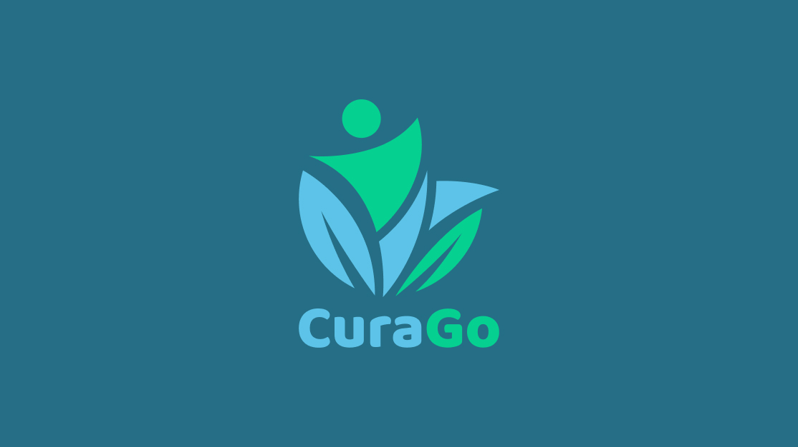
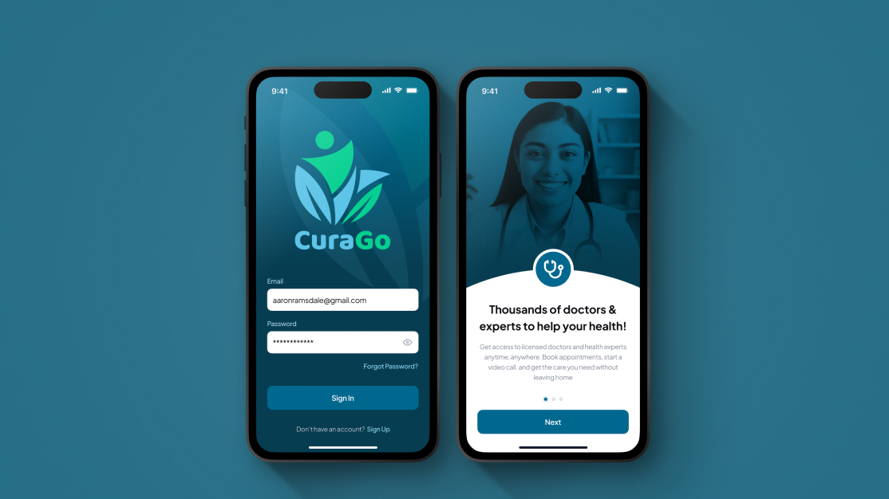
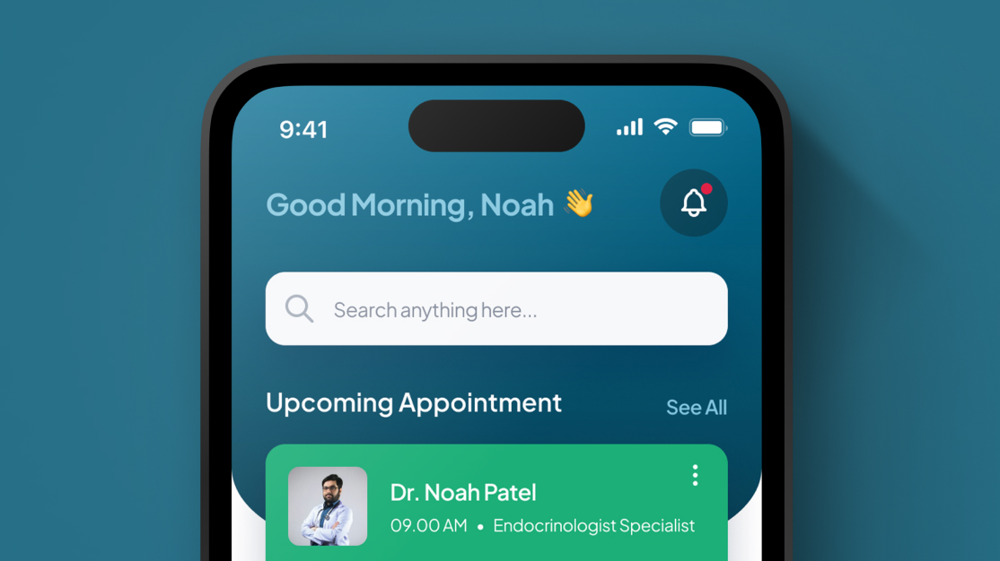
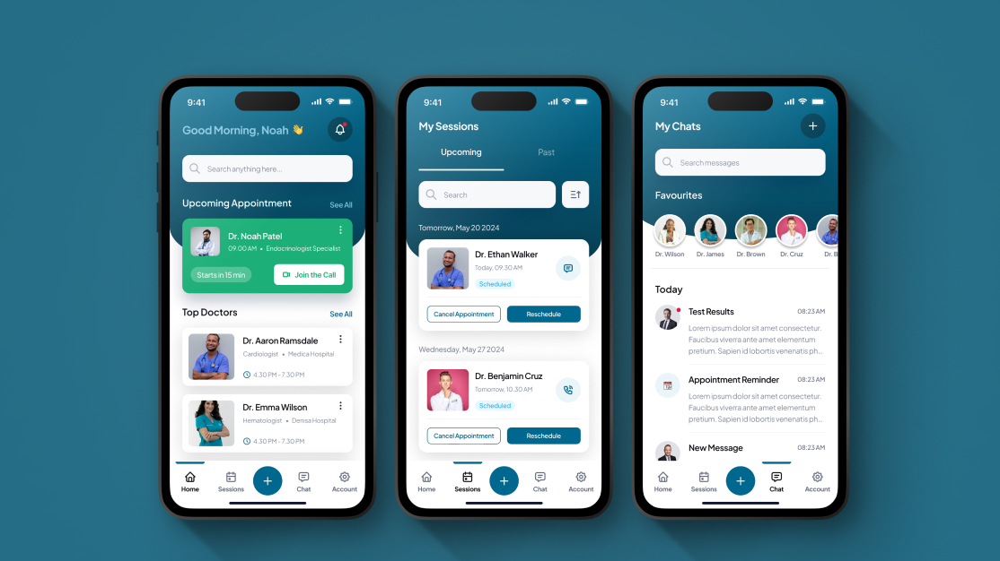
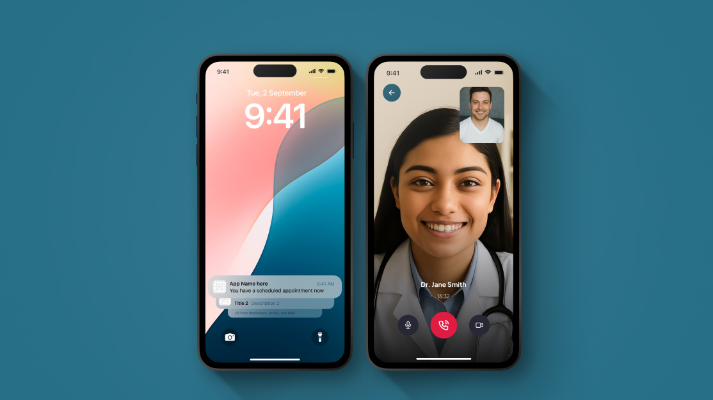

Healthcare access remains deeply uneven — not because care doesn't exist, but because the systems designed to deliver it are fragmented, opaque, and intimidating to navigate. CuraGo came to us with a bold brief: make personalised health management feel as natural and frictionless as any modern consumer product.
The founder had identified a clear gap between what patients needed — continuity, clarity, and genuine personalisation — and what existing digital health tools delivered. The challenge was to build something that felt trustworthy enough for a medical context, yet approachable enough that people would actually use it every day.
Discovery began with in-depth research into the patient journey — from the moment a health concern arises, through to follow-up care. We mapped the anxiety points, the drop-off moments, and the places where existing apps failed to earn long-term engagement. The insight was consistent: complexity was killing adoption.
Our define phase centred on three pillars — intelligent simplicity (AI-surfaced insights that felt helpful, not clinical), seamless access (telemedicine built into the flow rather than bolted on), and proactive guidance (preventive recommendations that anticipated needs before they became problems). These shaped the entire product architecture.
In design, we developed a visual language that balanced clinical credibility with warmth — a teal-forward palette, generous whitespace, and a typographic system that made health data legible and reassuring. The AI health tracking interface went through multiple rounds of prototyping to ensure the data felt actionable, not overwhelming.
A comprehensive healthcare platform spanning web and mobile — covering the full patient journey from onboarding and health profile creation, through AI-powered tracking and trend analysis, to live telemedicine consultations and follow-up care plans. We also delivered the design system, marketing site, and onboarding content strategy.







We partnered with CuraGo to deliver a comprehensive healthcare platform that bridges the gap between patients and personalised care. Our work encompassed UI/UX design, AI-driven health analytics, secure telemedicine features, and a robust wellness tracking system — all built as a cohesive product under one roof.
The platform launched to strong early adoption, with patients reporting significantly higher engagement compared to prior digital health tools they had used. The telemedicine flow achieved a consultation completion rate that exceeded industry benchmarks from day one.
A sophisticated portfolio analytics platform with real-time tracking, customisable dashboards, and comprehensive financial reporting.
View Project